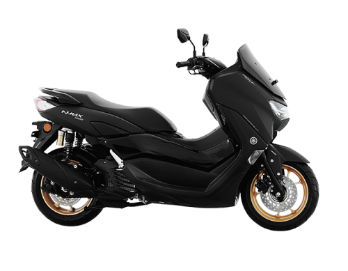

Scooter

Scooter is the most popular and cozy motorbike type for rent in Bali. It is suitable for every person, just few days and you can ride like a pro. We have various types of scooter, such as Honda Beat, Honda Scoopy, Honda Vario 125, Honda Vario 150 and more.
Maxi Scooter
Just like normal scooter but bigger in size, it’s also a popular ride in Bali. It is easy to spot tourists riding Maxi Scooter on the streets because it is very comfortable for driver and passenger. You can rent Yamaha Nmax, Yamaha Aerox, Yamaha Xmax with DONNA Motorbike Rental.
Why Choose Us?
Reasons to use DONNA Motorbike Rental

Choose
You can choose the best scooter and maxi scooter from our catalog. We will definitely providing you all your needs for the best holiday in Bali.

Instant Booking
Once you fill out the rent form, your booking will be immediately sent via Whatsapp. So if you made a mistake, it's still editable.
High Quality
The motobikes we offer are regularly serviced and washed to ensure the quality of it. Sanitized helmets also included for every ride so you can ride worry-free.
Ask Anytime
We and our partners are very responsive. Please text us and we will try to solve your problem, answer your questions and be simply useful and interesting to you!
About Us
DONNA
Motorbike RentalDONNA Motorbike Rental is a modern motorbike rental company in Bali. Our rental company has been established in 2019 and we constantly develop our business until now.
Jl. Pantai Berawa No.25, Tibubeneng, Kec. Kuta Utara, Kabupaten Badung, Bali 80361
Contact Us